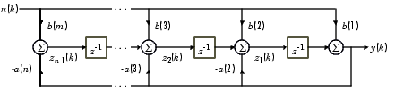

All of these implementation use a multiply-and-accumulate (MAC) scheme to compute each of the terms on the right side of the following equation, then divides by
a(1), if necessary. Some of the implementations are serial, some are parallel. Some are fixed point, some floating. a(1)*y(n) = b(1)*x(n) + b(2)*x(n-1) + ... + b(nb+1)*x(n-nb)
- a(2)*y(n-1) - ... - a(na+1)*y(n-na)
If a(1) is not equal to 1, you must divide the right side by a(1).
The actual filter form implemented was the Direct Form Type I transposed similar to what Matlab uses for its filter function. This means that the Matlab filter design funcitons (which yield the a's and b's) can be used to design filters. Input is from the audio codec and output is back to the audio codec. There are a set of modules which are needed for all of the test programs below which interface to the audio codec. They are: cpuclockPLL.v, I2C_AV_Config.v, I2C_Controller.v, Reset_Delay.v, AUDIO_DAC_ADC.v and VGA_Audio_PLL.v. Each of the filter implementations has one top level module which needs to be incorporated into the project (using the menu item: project>Add/Remove files in project). The project with all top-level modules and interfaces is zipped here (QuartusII version 8.1). All of these filters receive input from the audio
line-in (blue phone jack) and send output to audio line-out (green phone jack). The project archive (QuartusII version 10.1) using 18-bit fixed point filters (and a slightly different audio out register structure) is here.General second, fourth and sixth order IIR (18-bit fixed point) .
The first implementation top-level module has modules for 2, 4, and 6th-order IIR audio filters synched to run once/audio sample (about 47 KHz). Each filter runs in parallel with all the other filters and each filter uses one 18-bit multiplier, so that you could implement up to about 35 filters. The filters use 18-bit, 2's complement notation with 16 bits of fraction for both the signal and the coefficients. This means that all filter coefficients have to be scaled to the range
-1<coefficient<1. The matlab code to do the scaling and conversion to hex constants will produce estimates of the scaled constants which you must check for being in range.A matlab program to form the Verilog to specify the filter is at the end of the Verilog file as a comment. Typical Verilog filter code generated by the Matlab program is shown below. You must rename the module, and substitute in appropriate input and output variable names. The matlab program computes the a and b values, scales them to avoid overflow, and converts them to hex. The matlab program also plots the exact filter solution as well as the scaled 16-bit approximation. Always check the approximation to verify filter quality. The book Digital Signal Processing and the microcontroller was very useful for this code (see reference below).
An example of the generation of filters by creating the filter Verilog code in Matlab. The normalized filter cutoffs (
frequency/(Fs/2)) are [0.1 0.2], for a 4th order filter, and scaled by >>>2. Always check the approximation to verify filter quality. The plot below shows the result of coefficient truncation error on filter response. //Filter: cutoff=0.100000
//Filter: cutoff=0.200000
IIR4 filter(
.audio_out (your_out),
.audio_in (your_in),
.scale (3'd2),
.b1 (18'h149),
.b2 (18'h0),
.b3 (18'h3FD6E),
.b4 (18'h0),
.b5 (18'h149),
.a2 (18'hCD98),
.a3 (18'h2F54E),
.a4 (18'hA42E),
.a5 (18'h3D6F5),
.state_clk(AUD_CTRL_CLK),
.lr_clk(AUD_DACLRCK),
.reset(reset)
) ; //end filter
General second, fourth and sixth order IIR Filter (27-bit fixed point) .
This implementation extends the precision of the filters to allow accurate, lower bandwidth filters. As before the code modularizes the IIR filters and simplifies the generation of filters by creating the filter Verilog code in Matlab. The current version of the top-level module has modules for 2, 4, and 6th-order IIRs and a modified
signed_mult routine. The matlab program is at the end of the Verilog file as a comment. The matlab program computes the a and b values, scales them to avoid overflow, and converts them to hex. As in the last example, you must rename the module, and substitute in appropriate input and output variable names. The matlab program also plots the exact filter solution as well as the scaled 24-bit approximation. Always check the approximation to verify filter quality. Note that each filter uses 7 multipliers, so the maximum number of filters is 10. You could use these more expensive filters for narrow bandwidth fiters, which require more numerical accuracy, and 18-bit filters for higher bandwidth filters. A fairly narrow band filter ([0.1 0.13] at 47kHz sampling rate), six-pole filter is shown below. IIR filters using a simple CPU with fixed point (2:16) multiplier
It is often handy to be able to write a program to filter, rather then generate a state machine. A small cpu (Hamblen chapter 9) was extended to act as a simple DSP unit by extending the data word length ot 18-bits, and adding a 2:16 multiply instruction. I wrote an assembler for the cpu and a preprocessor which takes filter specification input and generates a table of required coefficients in a format suitable for pasting into the assembler code as the data section. Note that the
'a' filter coefficients are negated in the preprocessor so that only additions are necessary in the assembler code. Note also that the dynamic range of the filter constants is +/-2, so scaling is necessary and must be specified by the user of the preprocessor (see examples above and the DDA page! A fourth-order filter assembler example is here. The mif file resulting from the assembler is here, and has to be referenced near the end of the top-level module. The top-level module builds three cpus and connects two to the audio i/o. The top-level module resets the cpu on each left-right (stereo) clock transition (once per audio sample). The filter assembler source data sections are all that is different between cpu1, cpu2 and cpu3. The resulting three mif files (cpu1, cpu2, cpu3) are separately loaded into the respective cpu's M4K blocks. Note that the two cpu clocks are synced to CLOCK_50 (but the cpu PLL clocks them at 100 MHz.), while the cpu reset lines are synced to the audio control clock. Each 4-pole IIR filter takes 53 instructions to execute. Instructions are either 3 cycles or 5 cycles (for store). The number of cycles to execute each program is about 200 cycles, or two microseconds at 100 MHz. At a 48 KHz audio sample rate, about 10 four-pole filters could be run on each cpu, if there were enough memory for code and coefficients. One M4K block allows only about 3 four-pole filters to run. The assembler code does not have a loop, except for a spin-halt at the end, because execution starts at reset for each audio sample. The cpu ISA is:
instruction effect ADD addr accum <= accum + Mem(addr) STORE addr Mem(addr) <= accum LOAD addr accum <= Mem(addr) JMP addr PC <= addr JNEG addr PC <= (accum[17])? addr: PC OUT addr output(addr) <= accum IN addr accum <= input(addr) MULT addr accum <= accum * Mem(addr) (signed 2:16 fraction) SHL addr accum <= accum << Mem(addr) (shift of 0 to 7 bits) --single 18-bit accumulator --addr is 12-bits
IIR filters using a parallel, pipelined design
This top-level module is closely related to the canonical, direct form II, for an IIR digital filter (Grover and Deller, page 254, figure 6-27). The figure below is from matlab documentation.

The filters are resource intensive compared to the state machine filters above, but they are very fast because they are pipelined and all possible MACs happen at the same time.
IIR filters using 18-bit floating point and Second-Order Sections (SOS)
SOS filters have the advantage (over straight multipole filters) of smaller dynamic range on coefficients, so the numerical stability is better. SOS filters are also more straight forward to do with floating point. The downside is a few more state variables and a few more multiplies for each filter. A matlab program and function convert filter specifications to Verilog with 18-bit floating point. The top-level module defines filters of order 2, 4 and 6.
There is more information on floating point on the floating point page. Examples 3 and 4 on that page implement filters using floating point arithmetic. Example 4 is more stable becuase it uses second-order-sections (digital biquadratic sections) for the filters.
CIC filters are used when you need to low-pass filter and downsample at the same time. An example might be when you are demodulating an radio-frequency signal with a sample frequency of 50 MHz, but with a modulating signal in the audio range, which only needs a sample frequency of 48 KHz. See also CIC Filter Introduction by Matthew P. Donadio and Understanding CIC filters.
CIC with N=1,2, and 4 and M=1.
This example has first, second, and fourth order CIC filters. The top-level module should be used with the codec code zipped at the top of the page. A 108*2SW[3:0] Hz sine wave sampled at 27 MHz is downsampled to 48 KHz. Both sine waves are output to the audio DAC. This simple code will not work at a clock frequency higher than about 27 MHz because the long adders (40 to 60 bits) cannot complete a carry in much less time.
Note that it is illegal in the USA to operate an unlicensed transmitter on the AM or FM band (except under very limited conditions) or to cause radio interference in any way to someone else's reception. The following transmitter designs should be considered only as examples of modulation techniques and not used for any purpose.
AM transmitter:
Since the VGA DAC can sample above 50 MSamples/sec, it is possible to directly generate an amplitude-modulated radio signal in the standard AM band (530 KHz to 1700 KHz). The top-level module uses direct digital synthesis (DDS) to generate a 1.0 MHz sine wave for a carrier, then multiplies the carrier by an audio signal consisting of either a 400 Hz DDS unit or audio from the audio codec module described at the top of the page. The design implements:
y(t) = (C + a(t))*sin(2*π*F*t),where F=1.0 MHz, a(t) is the audio signal, and y(t) is the transmitted waveform. The audio signal originates in the audio codec ADC described in example 5 above. The audio signal has to be manipulated slightly to change the format from signed, 2's complement (produed by the audio codec ADC) to offset binary (required for the VGA DAC). The transmitted signal can be received by placing an AM radio within a few inches of the VGA connector. Do not connect an antenna to the VGA connector.
FM Transmitter:
The FPGA and DAC are not fast enough to generate a 100 MHz sine wave, but the 19th harmonic of a 4.5 MHz square wave falls in the FM band. Note that this design can cause strong radio interference at many frequencies and should never be used to actually transmit anything. The top-level module uses direct digital synthesis (DDS) to generate a 4.5 MHz FM modulated square wave using an audio signal consisting of either a 400 Hz DDS unit or audio from the audio codec module for modulation. The design implements:
y(t) = 0<sine((2*π*F+δf*a(t))*t),
where F=4.5 MHz, a(t) is the audio signal, δf is the conversion factor from audio input amplitude to frequency range, and y(t) is the transmitted, variable frequency, squarewave. The audio signal originates in the audio codec ADC described in example 5 above. The audio signal has to be manipulated slightly to change the format from signed, 2's complement (produed by the audio codec ADC) to offset binary. The verilog code below implements the DDS for carrier and audio tone generation, and modifies the DDS increment to FM modulate the signal. The δf scaling factor is the left-shift of 15 bits. SW0 is used to select between two tones. SW1 is used to select tone or ADC audio input.
always @ (posedge CLOCK_50) begin //generate 4.5 Mhz square wave carrier with FM modulation DDS_accum <= DDS_accum + 32'h16FC7BBC + ((SW[1])? //Choose: sine wave/audio input (mod_out<<15) : (256+((modulation[15]==0)? modulation[15:7]+256 : modulation[15:7]-256))<<15) ; // generate 400/800 Hz DDS_accum_mod = DDS_accum_mod + ((SW[0])? 32'hF5E7 : 32'h85E7) ; end //hook up the ROM table for carrier sqwave sqTable(CLOCK_50, DDS_accum[31:24], sq_out); //hook up the ROM table for 400 Hz modulation sync_rom modTable(CLOCK_50, DDS_accum_mod[31:24], mod_out); //use the VGA DAC for an FM modulated RF signal assign VGA_R = sq_out; assign VGA_SYNC = 1 ; assign VGA_BLANK = 1 ; assign VGA_CLK = CLOCK_50 ;The transmitted signal can be received by placing an FM radio within a few inches of the VGA connector. Do not connect an antenna to the VGA connector. The whole project is zipped here.
The Karplus-Strong algorithm is a scheme for synthesizing the sound of a plucked string using physical synthesis techniques. The basic algorithm is simple enough to run in realtime on a microcontroller (see the microcontroller DSP page), but various extensions can be added which eat up processing. I implemented the basic algorithm in Verilog with the idea that multiple strings can be synthesized on the same FPGA. The scheme uses M4K block memory, hardware multipilers, and the audio codec. A state machine runs through five states once per audio sample (48KHz) using the left/right channel clock for sync. When a button is pushed, a burst of random numbers is injected into the model string to simulate a pluck. An example tuned to approximately 110 Hz (2 octaves below 440 A) is here. A scope screen shot below shows the waveform. A simple user interface allows you to chose the string frequency using the swithces. The interface is not very handy to use because the frequency and switch setting are inversely related. String damping is set by a gain factor which can take on values between about 0.47 and 0.50 (minimum damping). The default value used here is 0.495 (
18'h0_7EB8 in 18-bit 2's complement)), which is appropriate for lower frequency strings, but too low for higher frequencies. I added a low pass filter to the string pluck function. The cutoff is set very coarsely by switches [17:15]. All three switches in the up-position is minimum bandwidth, all switches in the down-position is unfiltered white noise. Compare unfiltered and heavily filtered for the same fundamental frequency. Switches [11:0] still set the period of the simulated string so that string
frequency=48000/SW[11:0]. The top module and the AUDIO_DAC_ADC module were modified. The AUDIO_DAC_ADC module is considerably simplified by eliminating all inputs except audio generated by the top level module. The whole project is archived here. DDS running at audio clock rate is connected to the audio codec DAC channels. Code. Quartus Archive. The output frequency is set as
F = (SW*(2^14))*(audio clock rate)/(2^32) = SW*(audio clock rate)*(2^-18) = SW*46000*(2^-18)The 2^14 is an scale factor to put the frequency into the audio range. The 2^32 results from using a 32 bit accumulator.
A second design adds low pass filtered white noise to one channel.
SW[0] DOWN outputs noise and SW[0] UP outputs quadrature sine wave.A third design modularizes the DDS (and adds phase control) and noise generators (and enables gain/cutoff setting on noise).
A fourth design combines two DDS modules, with added exponential atttack/decay, to form an FM audio synth channel.
Noise cancellation techniques attempt to dynamically find a filter which will remove a source of noise given two inputs: (1) A noise-contaminated input and (2) a noise reference. The two inputs might be (1) a 60 Hz contaminated electrophysiolgical recording and (2) input from the 60 Hz power line for reference. The filter needs to change in realtime because the nominal 60 Hz line actually varies by a few tenths of a cycle/sec over a period of a few minutes, so that a fixed, narrow-band notch filter will fail. The least-mean-squares (LMS) algorithm (see De Stefano reference below) can easily be implemented at audio rate on an FPGA.
Two tap 60 Hz noise reduction
The algorthms used here were tested first in Matlab. The first algorithm I implemented was from Ramos (see below), but modified for 60 Hz. The matlab program generates some fake action potentials and 60 Hz noise, adds them, then adaptive filters them by adjusting the phase and amplitude of a signal derived from the reference 60 Hz signal. The image below shows two panels. The top panel is the AP signal (spikes) contaminated by 60 Hz noise of the same amplitude. The bottom panel shows two traces. The red trace is the noise free input and the blue trace is the adaptively filtered output. You can see that the 60 Hz noise dies away over a few tenths of a second.
The Verilog version of this algorithm (summarized in the image below) is contained in the top-level module. The delay is implemented as a 200 entry circular buffer (at 48KHz audio sample rate, one cycle of 60 Hz is 800 sample times, so 200 samples is a phase shift of π/2). The spurious coupling lightning bolt refers to undesirable and unplanned electrostatic and magnetic interactions between equipment and the biological system resulting in 60 Hz noise in the recorded data. Some care is required to properly sequence the M4K block memory as a ring buffer. The state machine runs on the positive edge of the clock, the memory is updated on the negative edge. In addition, the write-address and write-data have to be set up before the write-enable is activated. The value of μ was set at a constant 2-10 implemented by a right-shift.
The
Audio_DAC.ADC input/output was again modified and simplified. A matlab program generated the reference noise and simulated biological signal. The whole project is zipped here. Three scope images show the whole adaption sequence, the first few milliseconds, and the last few milliseconds. The top trace in all images is the adaptive output, while the bottom trace is the noise-corrupted input. The 60 Hz noise level was set at 100% of the biological spike amplitude. The weight modification factor μ was set to 2-10. {kind=link}
{kind=link}
{kind=link}
Four tap 60 Hz and 180 Hz noise reduction
The adaptive filter described above can be extended to filter 60 Hz plus the third harmonic at 180 Hz. Quite often there is significant 3rd harmonic distortion on the 110 volt power line, which would end up as experimental noise to be filtered. A matlab program simulates the filter. Extending the filter to two frequencies requires more data in the form of memory of the input waveform. The top level module for this filter has four adjustable filter weights and four different length ring buffers set to phase shifts of π/2, π/3, and π/6 of a 60 Hz cycle. This matlab program acted as input to the FPGA with 3rd harmonic distortion similar to a square wave (30%). The resulting adaption is shown in the mpeg. The top trace is the adaptively filtered signal, and the bottom trace is the noisy input. Over 10 seconds you can see the signal emerge from the noise. The two folowing images show scope traces. The first shows the 60 Hz rapidly decreasing. The second shows the convergence after about 5 seconds.
{kind=link}
{kind=link}
Eight tap noise reduction
Extending the filter to eight taps causes some instabilities to occur, apparently caused by overflow/underflow of the variable fixed point coefficients. The top level module implements the filter with seven delay line lengths from 200 samples down to 40 samples, equally spaced. A matlab code supplied a test signal with fairly large second and third harmonic noise contribution. Not all phase shifts or amplitudes could be canceled, for reasons still to be determined.
The audio codec supports ADC conversion of microphone or line inputs into the FPGA, and DAC conversion of digital audio from the FPGA to line out. This example shows how to set up playback from the FPGA to line out. Using the original Terasic code, Playback is supported from flashRAM, SDRAM, SRAM or by direct on-the-fly synthesis.
The logical structure of the hardware driver:
- The top-level module just wires together the reset generator, PLL audio clock generator, the I2C codec configuration module and the audio DAC module.
- At reset, the
I2C_AV_configmodule sends out data to configure eleven 9-bit registers in the audio codec using theI2C_controllercommunication module. The following table shows the configuration bit and the configuration used in the example. - After the codec is configured, 16-bit, 2's complement, 48kHz, mono audio samples are sent to the DACDAT input of the codec using the
Audio_DACmodule The example uses audio samples generated by DDS. Parker Evans (2008) wrote a modified verion of the I2C controller and codec. His code generates an exact clock by using USB mode with a 12MHz Master Clock and Codec configured for 48KHz/48KHz sampling rates.
Register num -- address -- NameFunctionsExample design dataR0 (00h) Left Line In b4:0 is line volume.
b7=1 mutes.
b8=1 locks line vol together.data=1a; almost full volume, no mute R1 (02h) Right Line In b4:0 is line volume.
b7=1 mutes.
b8=1 locks line vol together.data=1a; almost full volume, no mute R2 (04h) Left headphone out b6:0 is volume.
b7=1 enables zero crossing.
b8=1 locks vol together.data=7b; almost full volume. Lineout on the DE2 is connected to this output. R3 (06h) Right headphone out b6:0 is volume.
b7=1 enables zero crossing.
b8=1 locks vol together.data=7b; almost full volume. Lineout on the DE2 is connected to this output. R4 (08h) Analog Audio Path Control b0=1 is mic boost.
b1=1 is mic mute.
b2 selects input to ADC (mic=1 or line=0)
b3=1 enables bypass
b4=1 turns on DAC
b5=1 turns on sidetone
b7:6 is sidetone volumedata=f8; no mic boost, no mic mute, line input to ADC, enable bypass, enable DAC, enable sidetone R5 (0ah) Digital Audio Path Control b0=1 disables highpass filter
b2:1 is de-emphasis control 11=48kHz, 10=44kHz, 01=32kHz, 00=disable
b3=1 is DAC soft mute
b4=1 stores DC offsetdata=06; enable highpass, 48kHz filter R6 (0ch) Power Down Control see data sheet data=00; turn it all on R7 (0eh) Digital Audio Interface Format b1:0 is format, use 01=MSB-first, left-justified
b3:2 is bit length, use 00=16 bitsdata=01; MSB, left, 16-bits R8 (10h) Sampling control b0=0 normal mode
b1=1 for best oversamplingdata=02; oversample R9 (12h) Active control b0=1 turns on codec data=01; crank it up! R15 (1eh) Reset control writing 0x00 resets not used
References
JO Hamblen, TS Hall and MD Furman, Rapid protoyping of digital systems, SPOC edition , Springer 2008
Antonio Di Stefano, Alessandro Scaglione, Costantino Giaconia, Efficient FPGA Implementation of an Adaptive Noise Canceller, IEEE Proceedings of the Seventh International Workshop on Computer Architecture for Machine Perception 2005
R. Ramos, A. MBnuel, G. Olivar, E. Trullols and J. Del Rio, Application by means of FPGA of an adaptive caiiceller 50 Hz interference in electrocardiography, IEEE Instrumentation and Measurement Technology Conference, Budapest, Hungary, May 21-23.2001.
Dale Grover and John R. Deller, Digital Signal Processing and the microcontroller , Prentice-Hall/Motorola University Press 1999.
Development History -- see top of page for current implementations!
General second order IIR (18-bit) .
This example uses a serial multiply-and-accumulate (MAC) scheme to compute two second-order IIR filters in 6 cycles. Input is from the audio codec and output is back to the audio codec. The top-level module implements a state machine clocked by the audio control clock (18 MHz) and synched to run once/audio sample (about 47 KHz). If the state machine was clocked from
clock_50 there were synch problems resulting in audio glitches. Each filter runs in parallel with all the other filters and each filter uses one 18-bit multiplier, so that you could implement up to about 35 filters. The filters use 18-bit, 2's complement notation with 16 bits of fraction for both the signal and the coefficients. This means that all filter coefficients have to be scaled to the range -1<coefficient<1. The matlab code to do the scaling and conversion to hex constants is at the end of the Verilog file as a comment. The matlab code to generate a frequency sweeping sine wave is also included at the end of the file. The whole project is zipped here. The actual filter form implemented was the Direct Form Type I transposed similar to what Matlab uses for its filter function. This means that the Matlab filter design funcitons (which yield the a's and b's) can be used to design filters. The form is shown below. The serial MAC operation steps through each of the terms on the right side of the equation, then divides by a(1), if necessary. a(1)*y(n) = b(1)*x(n) + b(2)*x(n-1) + ... + b(nb+1)*x(n-nb)
- a(2)*y(n-1) - ... - a(na+1)*y(n-na)
If a(1) is not equal to 1, you must divide the right side by a(1).
The example has a Butterworth low pass filter with a normalized cutoff of 0.1 and an Butterworth bandpass filter with normalized cutoffs of [0.1 0.15]. The bandpass filter uses coefficients scaled by 0.5, so that the final MAC output has to be multiplied by two using a shift. Minor extensions to the state machine would allow higher order filters, but going too high causes numerical problems. Fourth order filters are probably safe, but sixth and higher should be carefully verified.General fourth order IIR (18-bit) .
This example synthesizes a general 4th order IIR filter using the same serial scheme as above. The top-level module has a few more states. The matlab programs to generate the coefficients is improved to generate Verilog directly and to plot the filter response. The matlab programs are included as comments at the end of the Verilog. In the image below, the blue line is the filter response calculated by matlab and the red dots are measured from a scope attached to the DE2 audio output. The logic used on the CycloneII FPGA for one filter is about 1.3% of the total available. The book Digital Signal Processing and the microcontroller was very useful for this code (see reference below).

Modularized IIR Filter version (18-bit) .
This example modularizes the IIR filters and simplifies the generation of filters by creating the filter Verilog code in Matlab. The current version of the top-level module has modules for 2, 4, and 6th-order IIRs. The matlab program is at the end of the Verilog file as a comment. This example also builds a pulse-width modulator (PWM) so that the LEDs on the DE2 can be used to indicate filter output. Typical Verilog filter code generated by the Matlab program is shown below. You must rename the module, and substitute in appropriate input and output variable names. The matlab program computes the a and b values, scales them to avoid overflow, and converts them to hex. The matlab program also plots the exact filter solution as well as the scaled 16-bit approximation. An example is shown below for normalized cutoffs (
frequency/(Fs/2)) of [0.1 0.2], 2nd order, and scaled by >>>2. Always check the approximation to verify filter quality. //Filter: cutoff=0.100000
//Filter: cutoff=0.200000
IIR4 filter(
.audio_out (your_out),
.audio_in (your_in),
.scale (3'd2),
.b1 (18'h149),
.b2 (18'h0),
.b3 (18'h3FD6E),
.b4 (18'h0),
.b5 (18'h149),
.a2 (18'hCD98),
.a3 (18'h2F54E),
.a4 (18'hA42E),
.a5 (18'h3D6F5),
.state_clk(AUD_CTRL_CLK),
.lr_clk(AUD_DACLRCK),
.reset(reset)
) ; //end filter
Modularized IIR Filter version (27-bit) .
This example extends the precision of the filters to allow accurate, lower bandwidth filters. As before the code modularizes the IIR filters and simplifies the generation of filters by creating the filter Verilog code in Matlab. The current version of the top-level module has modules for 2, 4, and 6th-order IIRs and a modified
signed_mult routine. The matlab program is at the end of the Verilog file as a comment. This example also builds a pulse-width modulator (PWM) so that the LEDs on the DE2 can be used to indicate filter output. The matlab program computes the a and b values, scales them to avoid overflow, and converts them to hex. As in the last example, you must rename the module, and substitute in appropriate input and output variable names. The matlab program also plots the exact filter solution as well as the scaled 24-bit approximation. Always check the approximation to verify filter quality. The whole project is zipped here. Note that each filter uses 7 multipliers, so the maximum number of filters is 10. You could use these more expensive filters for narrow bandwidth fiters, which require more numerical accuracy, and 18-bit filters for higher bandwidth filters. A fairly narrow band filter ([0.1 0.13] at 47kHz sampling rate), six-pole filter is shown below. Filtering at 8 KHz sampling rate (18-bit).
A sampling rate of 8 KHz is more appropriate for voice analysis. Three modifications are necessary to make the audio codec run at 8 KHz: (1) Change one status word in the codec initialization table in the
I2C_AV_Config.v module; (2) Change the sample rate constant in AUDIO_DAC_ADC.v and change the lengths of the clock divider registers (BCK_DIV, LRCK_1X_DIV, LRCK_2X_DIV, LRCK_4X_DIV) so that they don't overflow because of the lower sample rate; (3) Change the audio clock PLL megawizard module (use the megawizard to edit VGA_Audio_PLL.v) to use CLOCK_50 and modify the input clock specification in the top_level module. The whole project is zipped here. Using the same audio filters as above, the band pass normalized frequency [0.1 0.2] is now at 400 to 800 Hz. To do: second order sections, FIR, multiple filters in one state machine
It is often handy to be able to write a program to filter, rather then generate a state machine. A small cpu (Hamblen chapter 9) was extended to act as a simple DSP unit by extending the data word length ot 18-bits, and adding a 2:16 multiply instruction. I wrote an assembler for the cpu and a preprocessor which takes filter specification input and generates a table of required coefficients in a format suitable for pasting into the assembler code as the data section. Note that the
'a' filter coefficients are negated in the preprocessor so that only additions are necessary in the assembler code. Note also that the dynamic range of the filter constants is +/-2, so scaling is necessary and must be specified by the user of the preprocessor (see example 4 above and the DDA page! A fourth-order filter assembler example is here. The mif file resulting from the assembler is here, and has to be referenced near the end of the top-level module. The top-level module builds one cpu and connects it to the audio i/o. The entire project is zipped here. The example filter is set to a bandpass of about 3.0 KHz (at 48kHz sample rate). The top-level module resets the cpu on each left-right (stereo) clock transition (once per audio sample). The assembler code does not have a loop, except for a spin-halt at the end, because execution starts at reset for each audio sample. The cpu ISA is:instruction effect ADD addr accum <= accum + Mem(addr) STORE addr Mem(addr) <= accum LOAD addr accum <= Mem(addr) JMP addr PC <= addr JNEG addr PC <= (accum[17])? addr: PC OUT addr output(addr) <= accum IN addr accum <= input(addr) MULT addr accum <= accum * Mem(addr) (signed 2:16 fraction) SHL addr accum <= accum << Mem(addr) (shift of 0 to 7 bits) --single 18-bit accumulator --addr is 12-bitsThe second example is a modifed top-level module version with:
- Improved clock synchronization between the cpu and audio. But note that the internal timing of the audio codec cannot be analysed by Quartus. Even a small lag in setting the data for one of the audio output channels will result in audio artifacts.
- A PLL to run the cpus at 100 MHz.
- Two cpus to implement two independent filters.
A third example is further modified to make a sum of filter outputs, which required changing the way the audio output was calculated to minimize lag with respect to the audio L/R DAC clock edge. Three filter outputs are added to make the left output channel. The filter assembler source data sections are all that is different between cpu1, cpu2 and cpu3. The entire project is zipped here. The Quartus archive is here.
This verilog design is closely related to the canonical, direct form II, for an IIR digital filter (Grover and Deller, page 254, figure 6-27). The figure below is from matlab documentation.
The filters are resource intensive compared to the state machine filters above, but they are very fast. The entire project is zipped here.
The floating point page examples 3 and 4 implement filters using floating point arithmetic. Example 4 is more stable becuase it uses second-order-sections (digital biquadratic sections) for the filters.